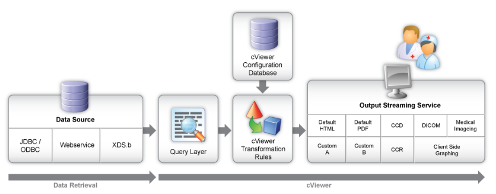

cViewer
Les hôpitaux reçoivent souvent des données dans différents formats et ont l'obligation d'afficher ces données facilement sans utiliser plusieurs outils. Concerto™ Viewer (cViewer) permet aux organismes de soins de santé d'afficher des documents pour toute source de données donnée. Il permet d'afficher des types de fichiers provenant de différents emplacements avec n'importe quel système d'information qui prend en charge une gamme de sources de données, y compris les services Web, XDS.b et l'accès JDBC/ODBC à un système de gestion de base de données relationnelle (SGBDR).
Un outil puissant
1. Les données sont extraites de la source de données telle que définie dans la configuration.
2. Les règles de transformation sont appliquées en fonction du filtre associé à la configuration.
3. Les données sont affichées selon les règles de transformation